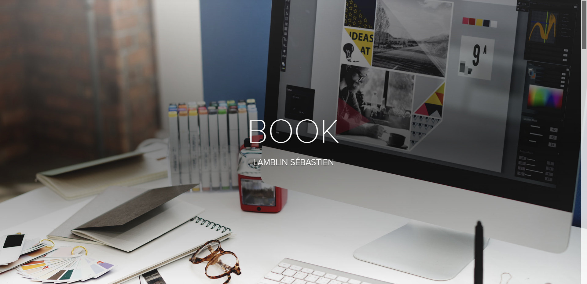
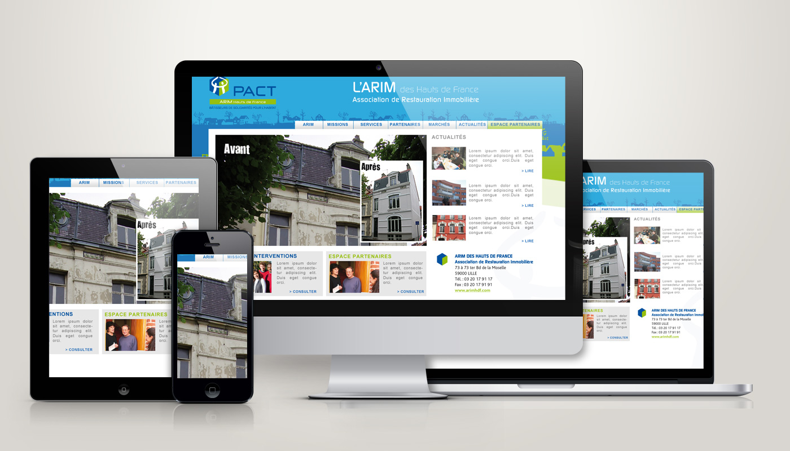

Design
Je travaille la composition, la lisibilité, la couleur, l’image et la cohérence visuelle d’une interface.
01 / Profil
Je viens du graphisme et du webdesign. Aujourd’hui, je développe mes compétences en HTML, CSS, JavaScript et intégration front-end pour créer des expériences web modernes, lisibles et utiles.
02 / À propos
Je travaille la composition, la lisibilité, la couleur, l’image et la cohérence visuelle d’une interface.
Je pense les interfaces pour qu’elles soient simples à comprendre, agréables à parcourir et adaptées aux utilisateurs.
J’intègre des pages web structurées, responsive et propres avec HTML, CSS et JavaScript.
03 / Compétences
04 / Projets

Projet 01
Création d’un portfolio responsive en HTML et CSS pour présenter mon profil, mes compétences et mes projets.
HTML / CSS / Responsive Design
Voir le dépôt GitHub →
Projet 02
Réalisation d’une interface web moderne pensée pour la lisibilité, l’ergonomie et l’expérience utilisateur.
HTML / CSS / JavaScript
Voir le dépôt GitHub →05 / CV
Consultez mon parcours, mes expériences et mes compétences dans mon CV au format PDF.
06 / Contact